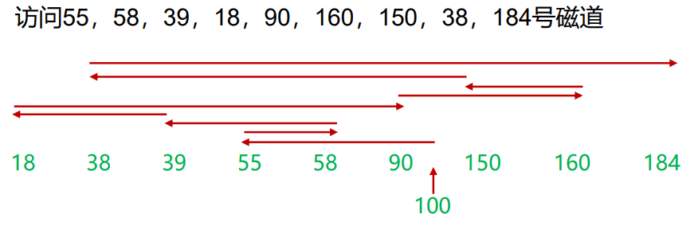
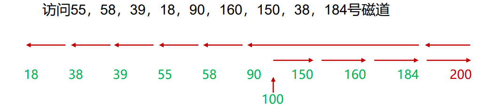
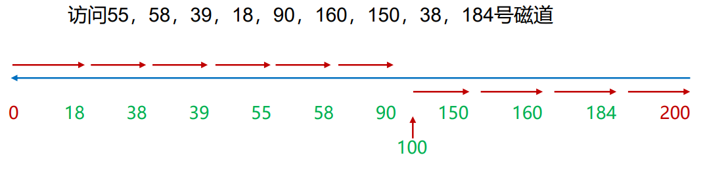
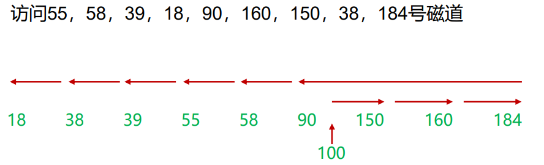
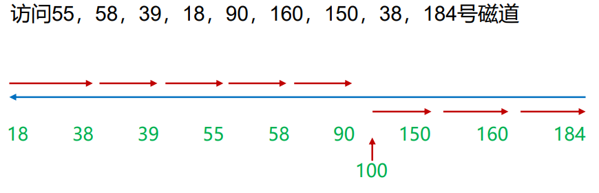

外部存储器
外部存储器：存储不经常使用的，数据量较大的信息。
- 磁盘存储器
- 光存储器
- 磁带
- U盘，固态硬盘
磁盘存储器：是由涂有可磁化材料的非磁性材料（基材）构成的圆形盘片
磁盘存储器结构：

- 一个硬盘有多个盘片，每个盘片有一个读写磁头。所有磁头通过机械方式固定在一起，同时移动。

- 每个盘片有多个磁道，磁道呈同心圆环形结构，每个磁头运动的轨迹就是一个磁道。
- 一个磁道分为多个扇区，每个扇区是计算机每次读取的数据的最小单位。
- 一个扇区默认大小为512B
- 磁道从外往里递增，外面小里面大
- 磁道与磁道之间有间隙；扇区与扇区之间也有间隙
数据组织：
- 恒定角速度：磁盘能够以恒定的角速度扫描信息，恒定的数据传输率
优点：能以磁道号和扇区号直接寻址各个数据块；缺点：存储容量受限

- 多带式记录：距离中心较远的分区包含的扇区数多于距离中心较近的分区
优点：提升存储容量；缺点：电路复杂

- 柱面：所有盘片上处于相同的相对位置的一组磁道被称为柱面(cylinder)

每个扇区中都包含一些仅被磁盘驱动器使用的数据（类似计网中的报文的头部）
格式化类型
低级格式化/物理格式化：创建硬盘扇区（sector）使硬盘具备存储能力的操作
- 有损操作，在硬盘受到外部干扰受到物理性损伤的情况下使用
高级格式化/逻辑格式化：根据用户选定的文件系统在磁盘的特定区域写入特定数据，以达到初始化磁盘或磁盘分区、清除原磁盘或磁盘分区中所有文件的一个操作
- 快速格式化，删除磁盘上所有数据，不备份检测，速度快，但是不稳定
- 完全格式化，清除磁盘所有数据，重新生成引导信息等
I/O访问时间
-
寻道时间：磁头到达目标磁道所需时间
-
旋转延迟：盘面旋转直到扇区抵达磁头位置的时间，通常是磁道旋转半周所需的时间
-
传送时间：数据传输所需的时间：，其中T=传送时间，b=传送的字节数，N=每磁道的字节数，r=旋转速率，转/秒
-
平均访问时间：平均寻道时间+平均旋转时间+数据传送时间：
访问多个连续的磁道时：旋转延迟需要每个磁道考虑，寻道时间只要考虑第一个
如果是随机存取，那么需要每次都计算寻道时间
磁盘调度算法：
当有多个访问磁盘任务时（需要访问不同的磁道），使得平均寻道时间最小
- FCFS：先来先服务，按任务顺序依次读取

- SSTF：最短寻道时间优先，优先处理与当前磁头最接近的任务（贪婪算法）

- SCAN：扫描/电梯：总是按照一个方向进行磁盘调度，直到该方向的边缘，然后改变方向扫描。注意是扫描到边缘，而不是这个方向的最后一个请求任务。

- C-SCAN：循环扫描：与SCAN类似，不过扫描到边缘后立即让磁头返回起点（磁道的另一端），返回途中不做任何处理。

- LOOK：SCAN算法的升级，但是不是扫描直到方向的边缘，而是到该方向的最后一个请求即返回改变磁头方向

- C-LOOK：C-SCAN算法的改进，扫描到该方向最后一个请求后返回到另一个方向离起点最近的一个请求

光存储器

1、CD和CD-ROM：用精密聚焦的高强度激光束制造一个母盘，以母盘作为模板压印出聚碳酸酯的复制品；在凹坑表面上镀上一层高反射材料
- 读取：激光束，照在凹坑上被散射，返回低强度激光；照在台面上，光滑平坦，返回高强度激光。（凹坑为1，平坦为0）
- 优点：廉价大规模复制，寿命长；缺点：只读，存取慢
- CD-R：写一次，包含染色层用于改变反射率；CD-RW：写多次，使用了不同相位状态下反射率不同的材料
2、数字功能光盘DVD：位组装更紧密，双层结构，可以使用两面记录数据，激光束更细
3、高清晰光盘：使用更短波长的激光（蓝、紫光范围内）实现更高的位密度
磁带
与磁盘类似的记录和读取技术，介质是柔韧的聚酯薄膜带，外涂磁性材料
读取：
- 磁带：顺序读取
- 磁盘：直接读取
并行记录：一个大磁道包含多个小磁道
NAND FLASH
与快闪存储器（EEPROM）类似，可在块级擦除，不能在字节级擦除，需要先擦除再写入
- NOR-FLASH：数据线和地址线分开，可以读任意字节
- NAND-FLASH：数据线和地址线共用，只能按页存取
U盘和固态硬盘
U盘：采用快闪存储器，体积小，容量大，携带方便
固态硬盘：与U盘没有本质区别，容量更大，存储性能更好，与硬盘相比抗震性好，无噪声，能耗低，发热量低